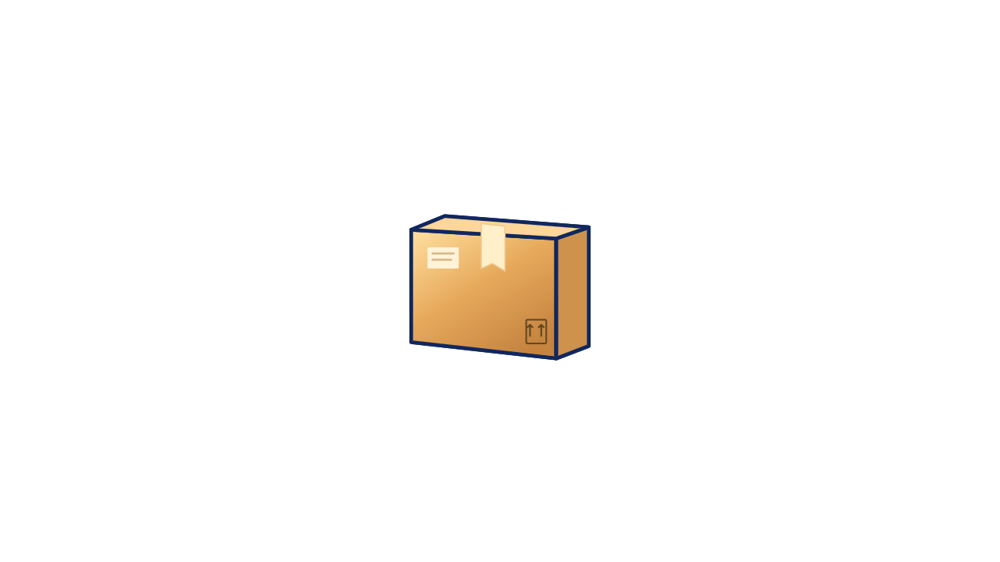
高清 · 有体积的封装纸箱
ani-atom-hd-cargo-box
原生160×130；正面、侧面、胶带可独立显隐；label≤6字。
播放分层预览 · 打开编辑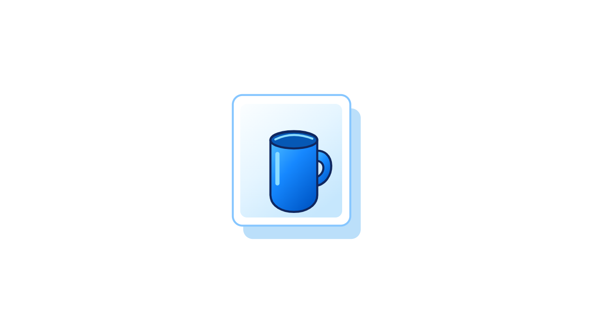
高清 · 商品照片卡片
ani-atom-hd-photo-card
原生180×200；kind cup/lamp/bag/shoe/chair/plant；label≤8字。商品始终在照片边框内。
播放分层预览 · 打开编辑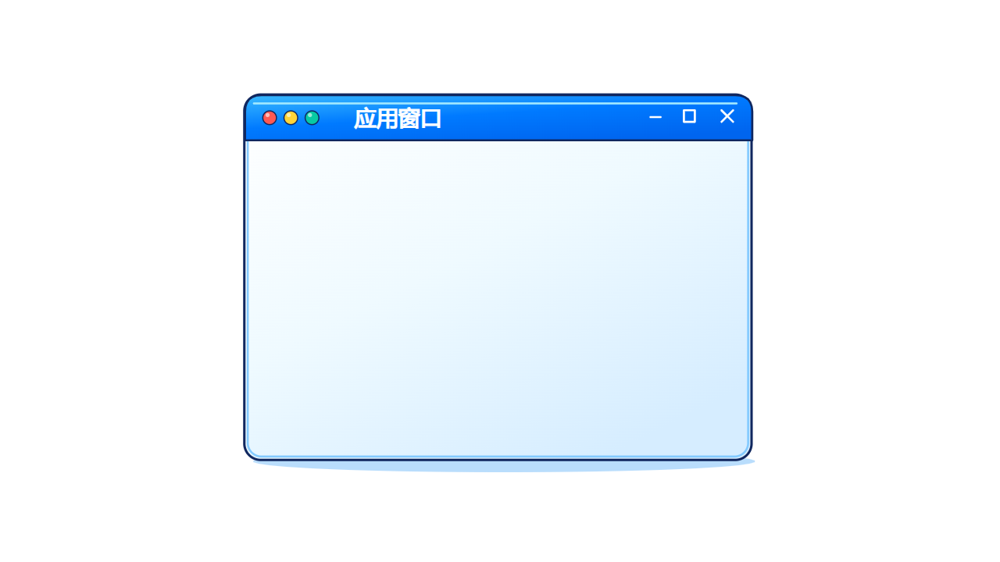
高清 · 蓝标题栏软件窗口
ani-atom-hd-window-shell
原生760×560；不含内层图或正文；title≤16字，caption≤9字。
播放分层预览 · 打开编辑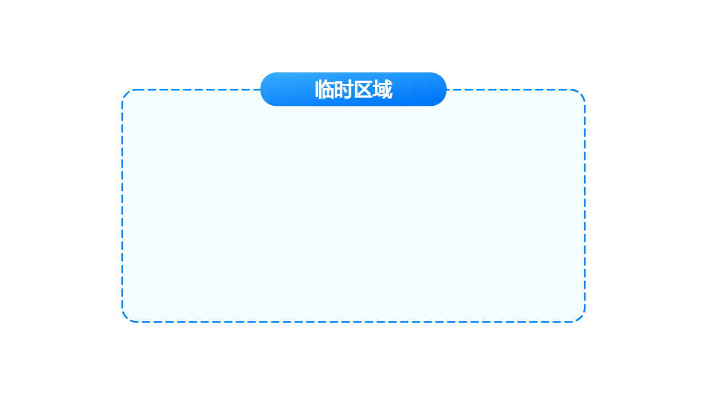
高清 · 虚线临时区
ani-atom-hd-buffer-area
原生680×370；只含虚线围合与标签；title≤14字。
播放分层预览 · 打开编辑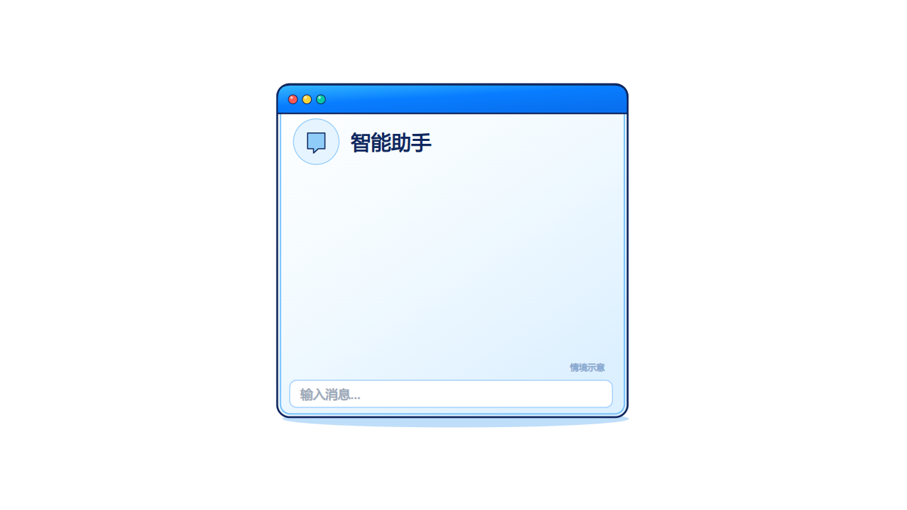
高清 · 可填消息的聊天窗口
ani-atom-hd-chat-shell
原生660×640；不含消息，消息区域x32 y165 w596 h370；title≤10字，input≤24字。
播放分层预览 · 打开编辑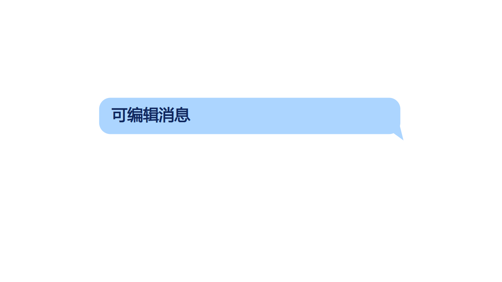
高清 · 单条角色消息气泡
ani-atom-hd-chat-message
原生500×150；role user/assistant；text≤20字或lines最多3行每行20字。
播放分层预览 · 打开编辑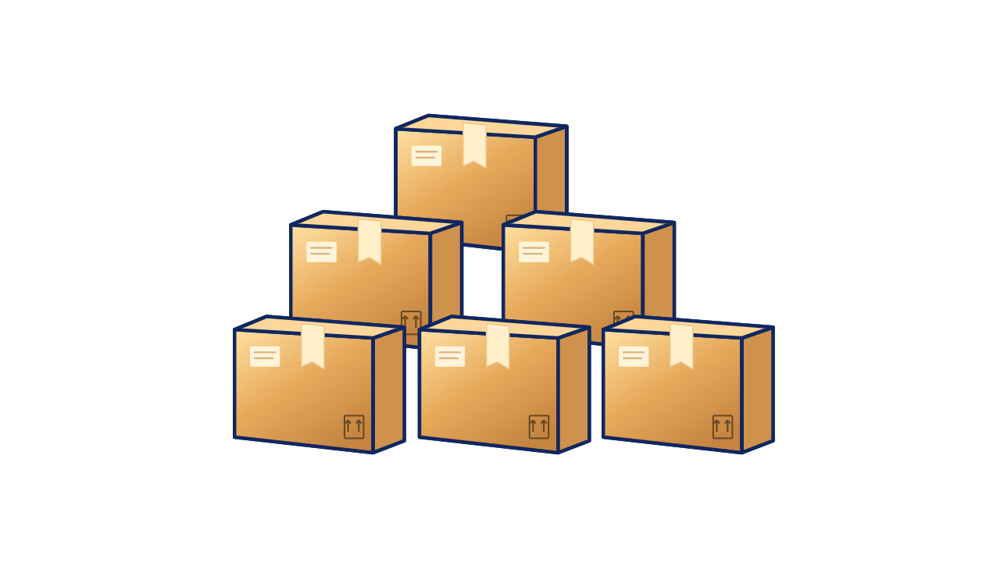
高清 · 可拆分纸箱组
ani-atom-hd-cargo-stack
原生460×290；count1–6，每箱独立data-kit-node；不含地垫。
播放分层预览 · 打开编辑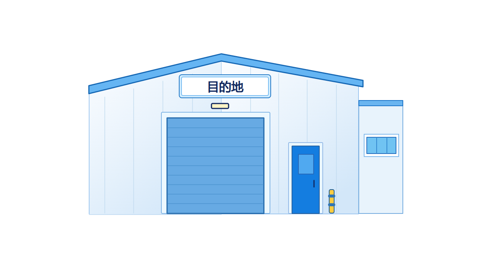
高清 · 仓库与卸货口
ani-atom-hd-warehouse
原生850×490；title≤9字。卷帘门、侧门、翼楼独立。
播放分层预览 · 打开编辑高清 · 带遮挡前沿的文件夹
ani-atom-hd-folder-shell
原生360×310；layer back/front/both可夹入照片；tone blue/gold/mint；label≤10字。
播放分层预览 · 打开编辑高清 · 保持商品身份的照片组
ani-atom-hd-photo-stack
原生380×230；count1–3，kinds cup/lamp/bag/shoe/chair/plant；每张可单独动画。
播放分层预览 · 打开编辑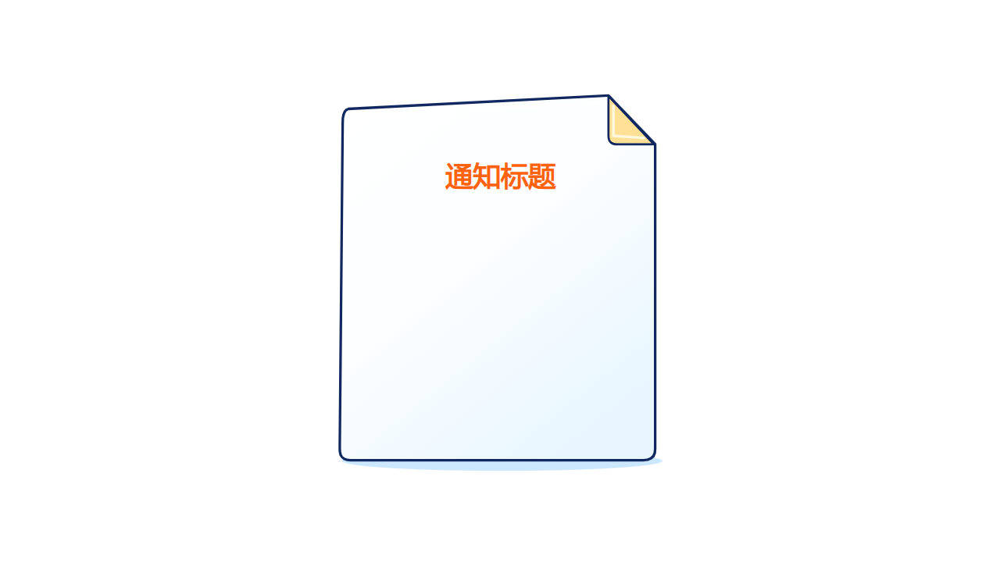
高清 · 可填字段的折角通知
ani-atom-hd-notice-paper
原生470×540；title≤14字，subtitle≤18字；内部正文区域x38 y170 w389 h320。
播放分层预览 · 打开编辑高清 · 标签与本次事实字段
ani-atom-hd-notice-field
原生400×86；label≤6字，value≤12字；空值用1–3灰色行。
播放分层预览 · 打开编辑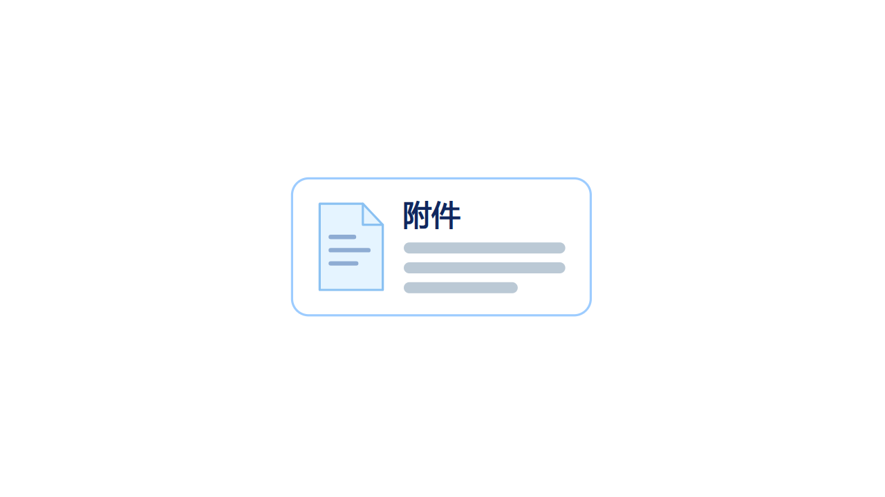
高清 · 报错或代码附件卡
ani-atom-hd-attachment-card
原生280×135；kind document/code/error/image；title≤8字，灰行0–3。
播放分层预览 · 打开编辑高清 · 可逐行揭示的占位回复
ani-atom-hd-reply-lines
原生450×120；count0–4，lengths为0–1；每行独立data-kit-node。
播放分层预览 · 打开编辑高清 · 一体纸飞机发送图标
ani-atom-hd-send-icon
原生64×64；不含按钮背景。
播放分层预览 · 打开编辑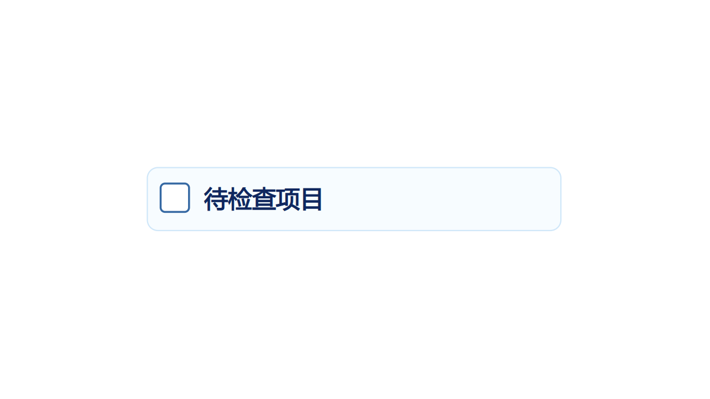
高清 · 不预设结果的检查行
ani-atom-hd-checklist-row
原生470×74；state unchecked/checked/failed；默认空框；text≤20字。
播放分层预览 · 打开编辑高清 · 可移动的放大镜
ani-atom-hd-magnifier
原生180×190；镜片与手柄分离；只作检查指示，无虚构放大结果。
播放分层预览 · 打开编辑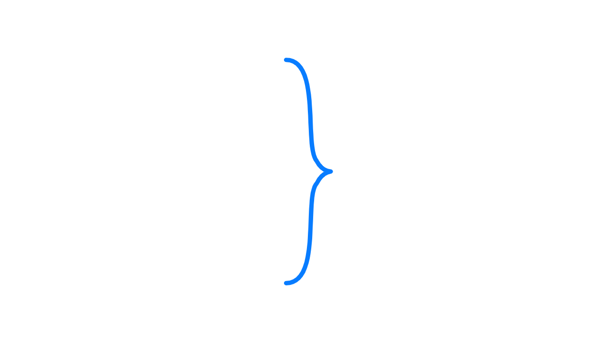
高清 · 无箭尖的比较括线
ani-atom-hd-brace
原生85×320；side left/right；仅比较对应，不表示传输。
播放分层预览 · 打开编辑高清 · 头杆一体的短操作箭
ani-atom-hd-flow-arrow
原生220×66；direction right/left；操作箭头与杆同一路径，退出无残杆。
播放分层预览 · 打开编辑高清 · 信息或警告圆角状态条
ani-atom-hd-status-pill
原生440×86；tone blue/mint/orange/light；text≤18字；icon none/warning。
播放分层预览 · 打开编辑高清 · 可编辑知识标题
ani-atom-hd-title
原生720×130；text≤16字，subtitle≤32字；超过建议字数自动缩字。
播放分层预览 · 打开编辑高清 · 橙色提问气泡
ani-atom-hd-question-bubble
原生610×280；lines1–3行，每行≤17字。
播放分层预览 · 打开编辑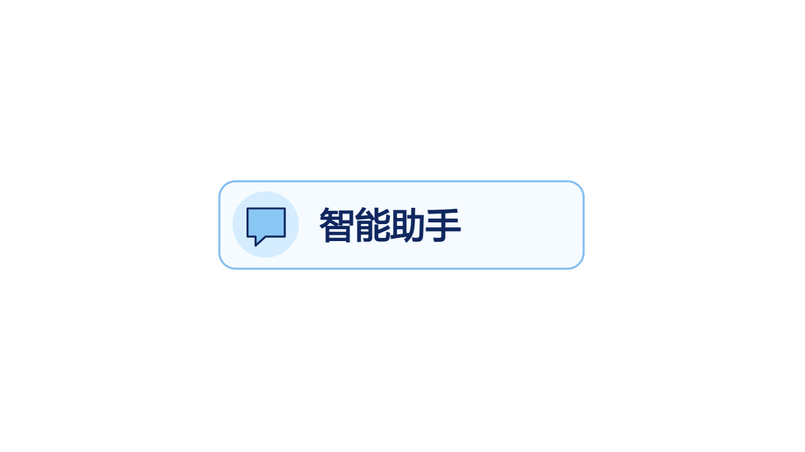
高清 · 官方小图标与可编辑名称
ani-atom-hd-brand-badge
原生370×95；brandSrc可选准确官方原件；默认中性图标；title≤10字。
播放分层预览 · 打开编辑高清 · 非执行性代码占位行
ani-atom-hd-code-lines
原生480×190；count0–6，highlightLine -1或0–5；仅抽象行，不冒充可执行代码。
播放分层预览 · 打开编辑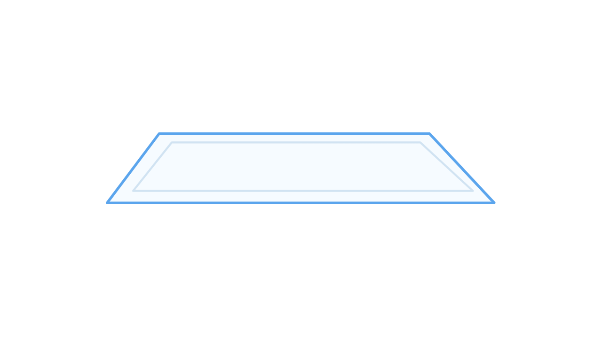
高清 · 卸货区域地垫
ani-atom-hd-destination-pad
原生600×130；不含箱子；label≤16字。
播放分层预览 · 打开编辑高清 · 可退场的局部强调框
ani-atom-hd-focus-ring
原生400×180；只突出局部，不改变对象状态。
播放分层预览 · 打开编辑高清 · 敞厢整车（含货物与投影）
ani-atom-hd-truck
原生870×486；整车、三轮、地面投影及常规货物是同一对象。cargoCount 0–5；移动和缩放整车时投影同步；仅卸货动作另用独立货物。
播放分层预览 · 打开编辑
高清 · 可调方向箭头
ani-atom-hd-direction-arrow
13种真实箭头形态；明确头部与尾端。方向right/left/up/down。strokeWidth2–14，headSize8–50，scale0.5–1。swallowtail的tailDepth6–60为实际像素空V口深度；原12种外观保持。arrowAnchors返回精确端点。不是关联括线。
播放分层预览 · 打开编辑
高清 · 语义文字标注框
ani-atom-hd-semantic-label
8种标题/对象/动作/结论/注意/疑问/注解形态。text≤32字，最多2行；lines可明确最多2行每行≤24。字号18–46且不自动缩字，过长报错。同语义全片冻结variant。
播放分层预览 · 打开编辑高清敞厢整车（含投影）
ani-module-hd-truck
整车、三轮、投影和常规货物绑定为一个车辆对象；整体移动缩放。只有卸货动作将货物独立。
播放分层预览 · 打开编辑高清照片文件夹
ani-module-hd-photo-folder
前后两层文件夹夹住独立照片；原图不会被工作副本替代。
播放分层预览 · 打开编辑高清通知字段组
ani-module-hd-notice-fields
纸页、标题、三条字段分离；改变事实时不复制整个旧通知。
播放分层预览 · 打开编辑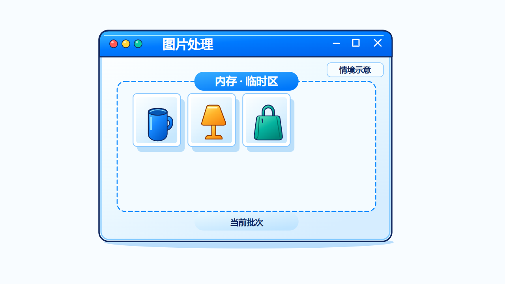
高清处理窗口
ani-module-hd-processing-window
外壳、虚线暂存区、每张照片和状态条分别配置。
播放分层预览 · 打开编辑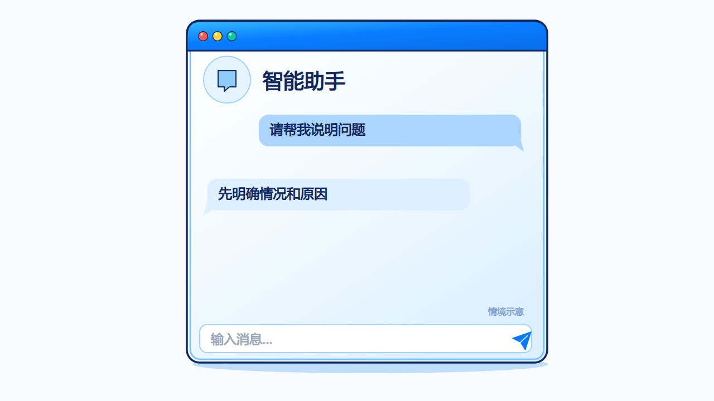
高清聊天消息组
ani-module-hd-chat
消息分角色左右定位；外壳、气泡、发送图标彼此独立。
播放分层预览 · 打开编辑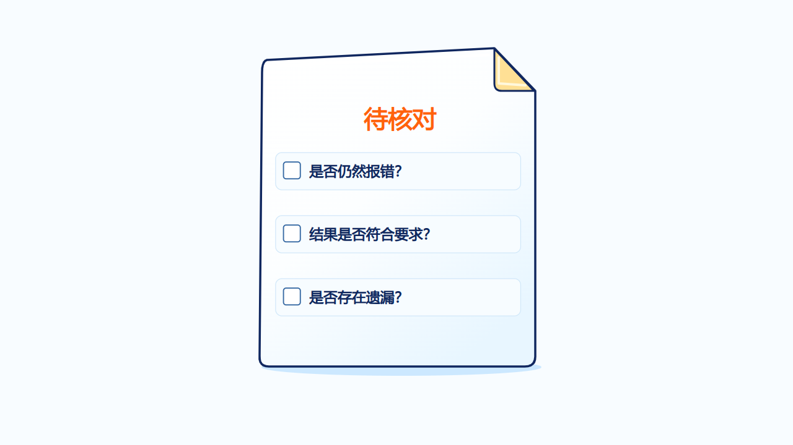
高清待核检查单
ani-module-hd-checklist
默认均未勾选，逐项结果需要真实验证后设置。
播放分层预览 · 打开编辑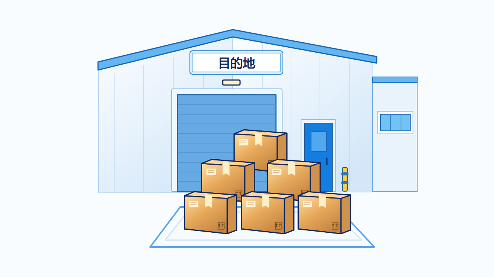
高清卸货目的地
ani-module-hd-warehouse
仓库、地垫、落地箱组分层，卸货结果可以独立保留。
播放分层预览 · 打开编辑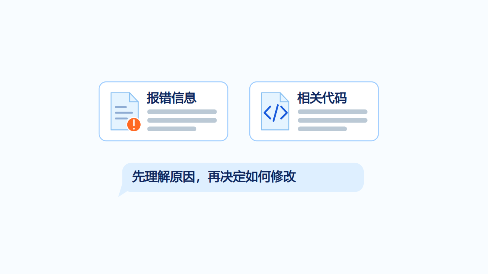
高清报错代码附件组
ani-module-hd-attachments
报错、代码两卡与解释文本分离；不会显示虚构修复成功。
播放分层预览 · 打开编辑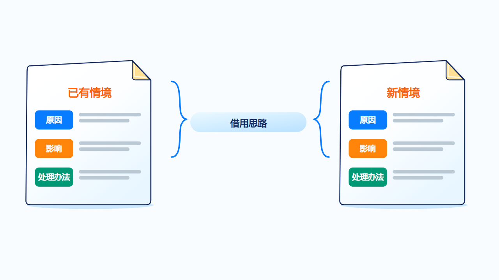
高清关系括线组
ani-module-hd-comparison
两对象通过无箭头括线建立关系，标签可替换，不表达数据流。
播放分层预览 · 打开编辑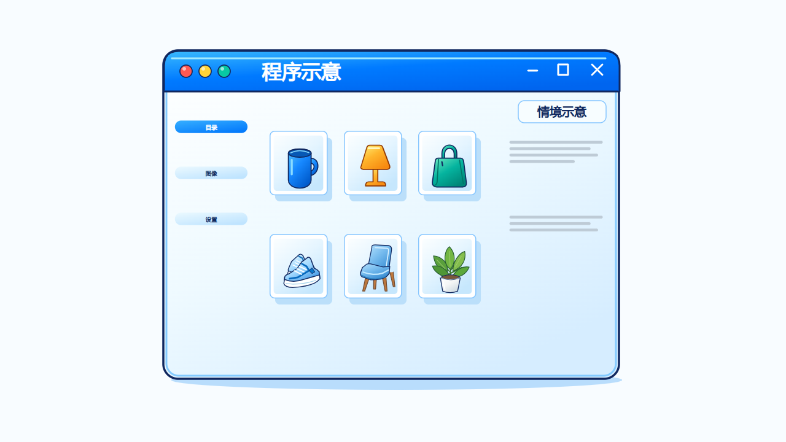
高清商品图库窗口
ani-module-hd-product-gallery
六张独立商品照片、导航及属性行分离；不是内存处理界面。
播放分层预览 · 打开编辑旧经验：装货货车
ani-transfer-hd-experience
高清素材 S01A 的可编辑对象重建；所有文字、图形、坐标和单件时序均可替换。
播放分层预览 · 打开编辑 · 原图对照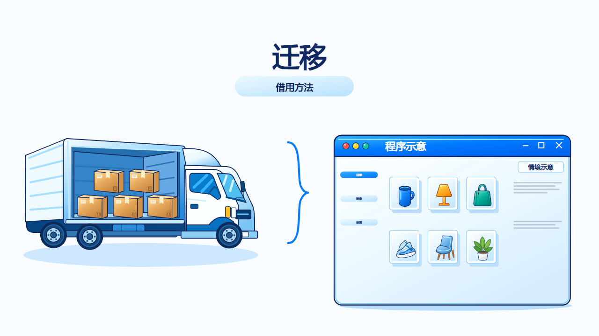
旧经验与新情境
ani-transfer-hd-experience-problem
高清素材 S01B 的可编辑对象重建；所有文字、图形、坐标和单件时序均可替换。
播放分层预览 · 打开编辑 · 原图对照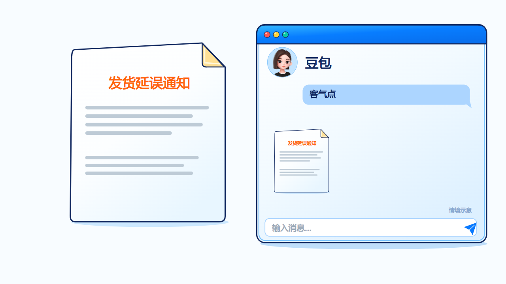
通知：仅调整措辞
ani-transfer-hd-notice-draft
高清素材 S02A 的可编辑对象重建；所有文字、图形、坐标和单件时序均可替换。
播放分层预览 · 打开编辑 · 原图对照
通知：补齐三项信息
ani-transfer-hd-notice-complete
高清素材 S02B 的可编辑对象重建；所有文字、图形、坐标和单件时序均可替换。
播放分层预览 · 打开编辑 · 原图对照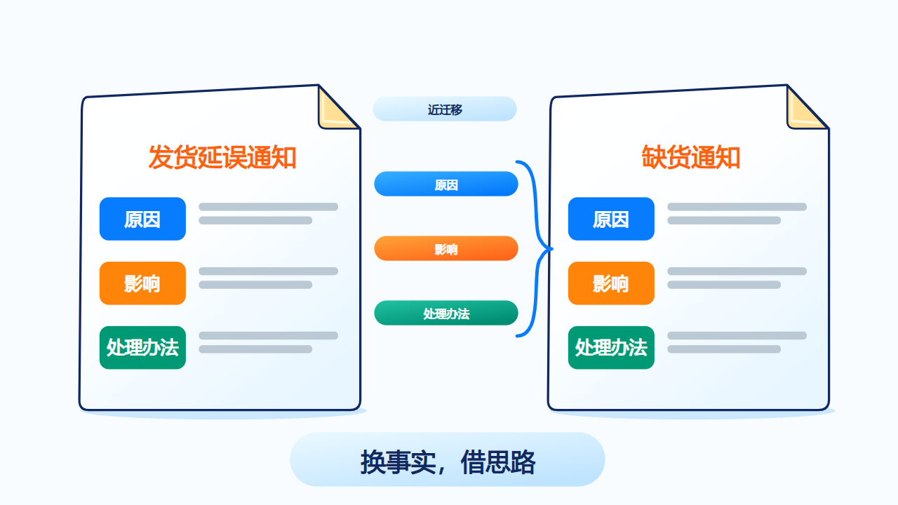
换事实，借思路
ani-transfer-hd-notice-reuse
高清素材 S03 的可编辑对象重建；所有文字、图形、坐标和单件时序均可替换。
播放分层预览 · 打开编辑 · 原图对照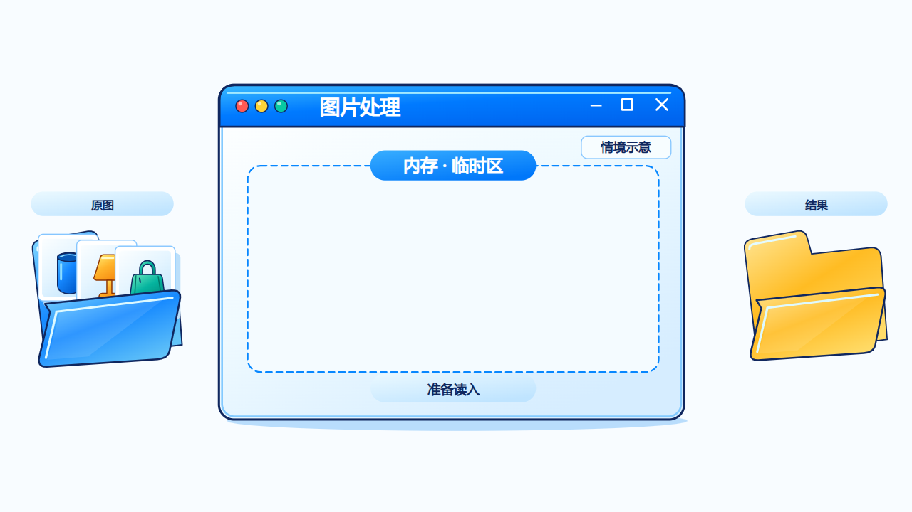
处理前：原图与空暂存区
ani-transfer-hd-before-read
高清素材 S04A 的可编辑对象重建；所有文字、图形、坐标和单件时序均可替换。
播放分层预览 · 打开编辑 · 原图对照图片拥挤与内存不足
ani-transfer-hd-capacity
高清素材 S04B 的可编辑对象重建；所有文字、图形、坐标和单件时序均可替换。
播放分层预览 · 打开编辑 · 原图对照解释原因，保留报错
ani-transfer-hd-error-explanation
高清素材 S05 的可编辑对象重建；所有文字、图形、坐标和单件时序均可替换。
播放分层预览 · 打开编辑 · 原图对照卸货前：本趟待卸
ani-transfer-hd-truck-loaded
高清素材 S06A 的可编辑对象重建；所有文字、图形、坐标和单件时序均可替换。
播放分层预览 · 打开编辑 · 原图对照卸貨后：空厢与保留货物
ani-transfer-hd-truck-empty
高清素材 S06B 的可编辑对象重建；所有文字、图形、坐标和单件时序均可替换。
播放分层预览 · 打开编辑 · 原图对照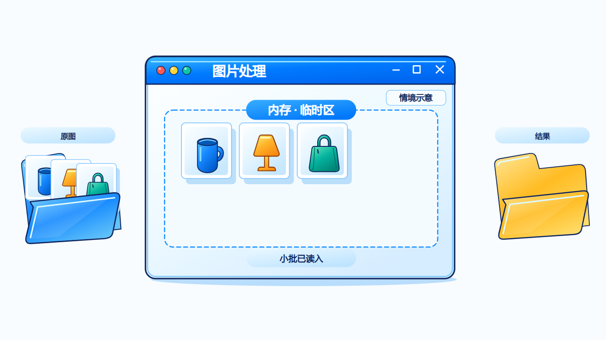
小批已读入
ani-transfer-hd-batch-read
高清素材 S07A 的可编辑对象重建；所有文字、图形、坐标和单件时序均可替换。
播放分层预览 · 打开编辑 · 原图对照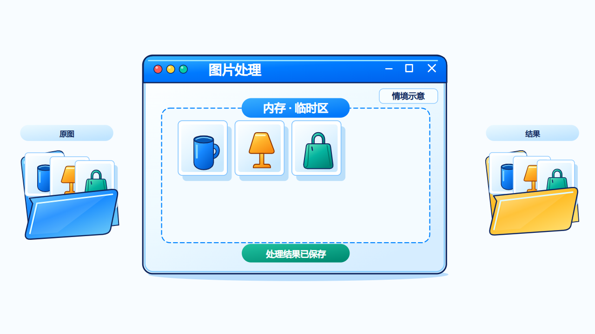
处理结果已保存
ani-transfer-hd-batch-saved
高清素材 S07B 的可编辑对象重建；所有文字、图形、坐标和单件时序均可替换。
播放分层预览 · 打开编辑 · 原图对照释放临时副本，保留结果
ani-transfer-hd-batch-released
高清素材 S07C 的可编辑对象重建；所有文字、图形、坐标和单件时序均可替换。
播放分层预览 · 打开编辑 · 原图对照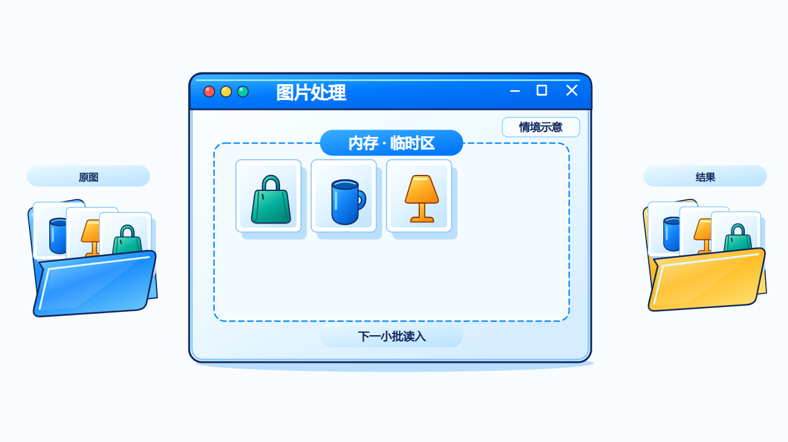
保留结果，读取下一批
ani-transfer-hd-batch-next
高清素材 S07D 的可编辑对象重建；所有文字、图形、坐标和单件时序均可替换。
播放分层预览 · 打开编辑 · 原图对照近迁移与远迁移都有用
ani-transfer-hd-near-far
高清素材 S08 的可编辑对象重建；所有文字、图形、坐标和单件时序均可替换。
播放分层预览 · 打开编辑 · 原图对照先提出问题，暂不宣告答案
ani-transfer-hd-ask-direction
高清素材 S09A 的可编辑对象重建；所有文字、图形、坐标和单件时序均可替换。
播放分层预览 · 打开编辑 · 原图对照从旧经验提出分批方向
ani-transfer-hd-propose-direction
高清素材 S09 的可编辑对象重建；所有文字、图形、坐标和单件时序均可替换。
播放分层预览 · 打开编辑 · 原图对照先核原因，再修改
ani-transfer-hd-check-cause
高清素材 S10A 的可编辑对象重建；所有文字、图形、坐标和单件时序均可替换。
播放分层预览 · 打开编辑 · 原图对照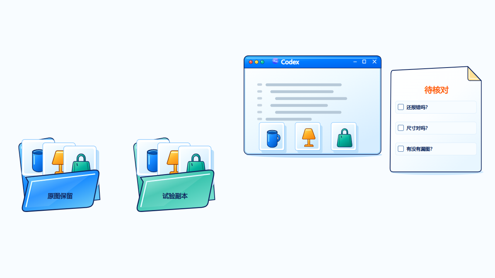
保留原图，副本试验
ani-transfer-hd-copy-verify
高清素材 S10B 的可编辑对象重建；所有文字、图形、坐标和单件时序均可替换。
播放分层预览 · 打开编辑 · 原图对照交付与学习：两个目的
ani-transfer-hd-two-purposes
高清素材 S11 的可编辑对象重建；所有文字、图形、坐标和单件时序均可替换。
播放分层预览 · 打开编辑 · 原图对照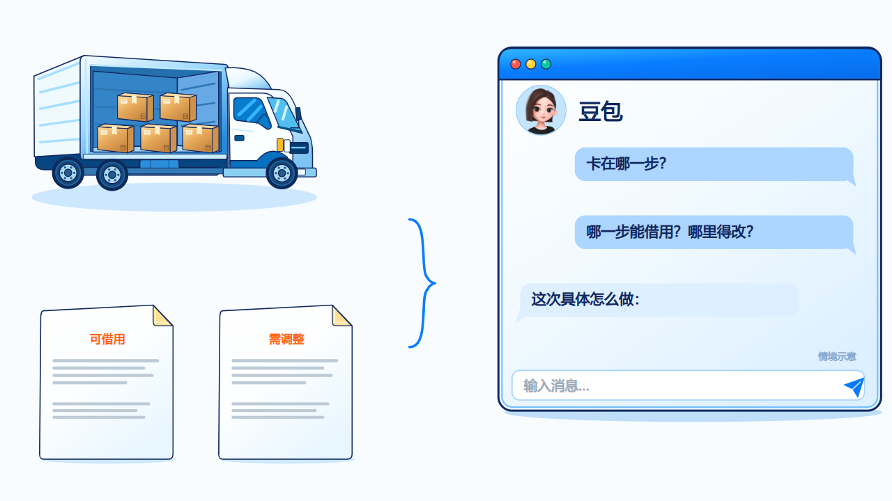
把经验转为具体做法
ani-transfer-hd-experience-to-action
高清素材 S12 的可编辑对象重建；所有文字、图形、坐标和单件时序均可替换。
播放分层预览 · 打开编辑 · 原图对照答案之外的思考
ani-transfer-hd-question-outro
高清素材 S13 的可编辑对象重建；所有文字、图形、坐标和单件时序均可替换。
播放分层预览 · 打开编辑 · 原图对照下期主题预告
ani-transfer-hd-next-topic
高清素材 S14 的可编辑对象重建；所有文字、图形、坐标和单件时序均可替换。
播放分层预览 · 打开编辑 · 原图对照动态：绕车卸货，货物保留
ani-transfer-hd-unload-motion
高清素材 S06A→S06B 的可编辑对象重建；所有文字、图形、坐标和单件时序均可替换。
播放分层预览 · 打开编辑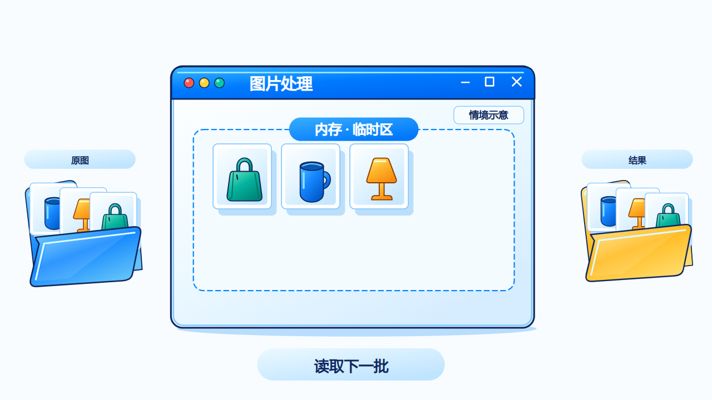
动态：读取、保存、释放、下一批
ani-transfer-hd-batch-motion
高清素材 S07A→S07D 的可编辑对象重建；所有文字、图形、坐标和单件时序均可替换。
播放分层预览 · 打开编辑动态：通知三字段逐项补齐
ani-transfer-hd-field-motion
高清素材 S02A→S02B 的可编辑对象重建；所有文字、图形、坐标和单件时序均可替换。
播放分层预览 · 打开编辑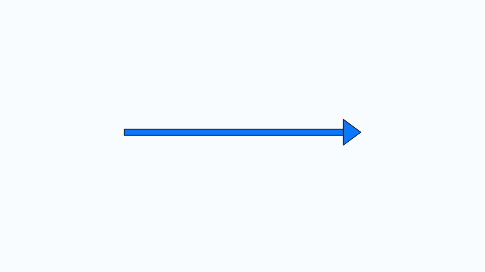
实心直指箭头
ani-atom-hd-arrow-solid
指向组件；straight路径；头部清晰。颜色、四向、线宽、头部像素和实例尺寸可调；与关联括线用途不同。
播放分层预览 · 打开编辑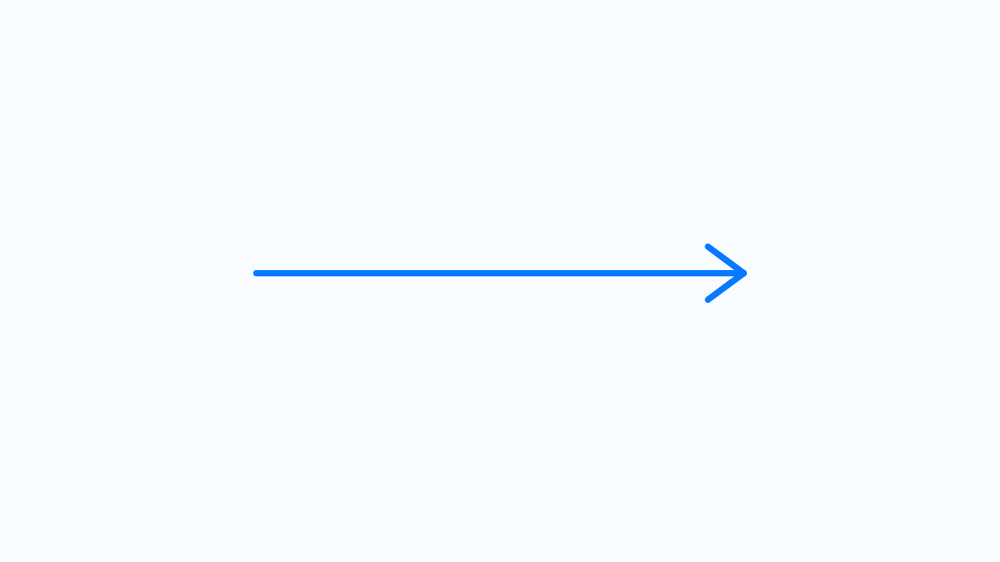
开放线头箭头
ani-atom-hd-arrow-open
指向组件；straight路径；头部清晰。颜色、四向、线宽、头部像素和实例尺寸可调；与关联括线用途不同。
播放分层预览 · 打开编辑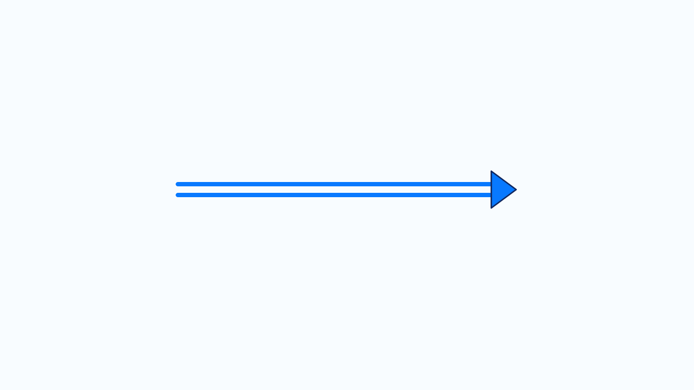
双轨线箭头
ani-atom-hd-arrow-double-line
指向组件；straight路径；头部清晰。颜色、四向、线宽、头部像素和实例尺寸可调；与关联括线用途不同。
播放分层预览 · 打开编辑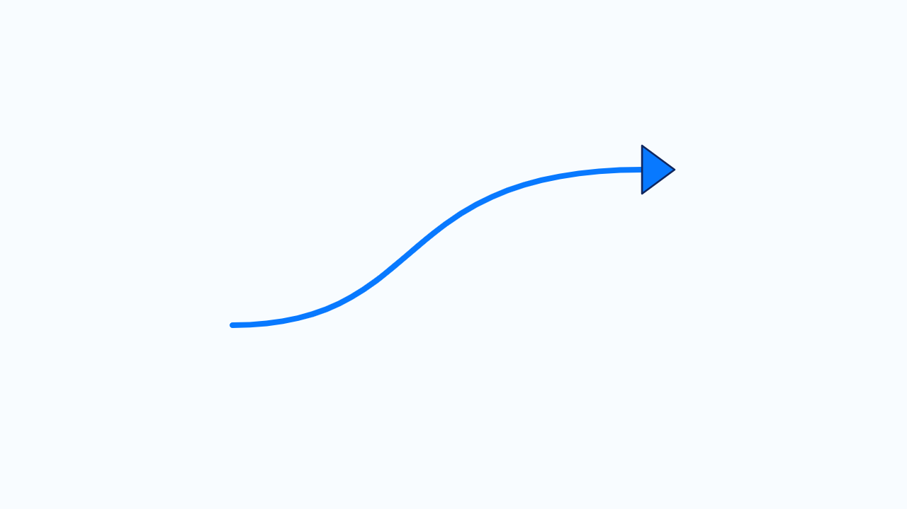
平滑弧线箭头
ani-atom-hd-arrow-curve
指向组件；curve路径；头部清晰。颜色、四向、线宽、头部像素和实例尺寸可调；与关联括线用途不同。
播放分层预览 · 打开编辑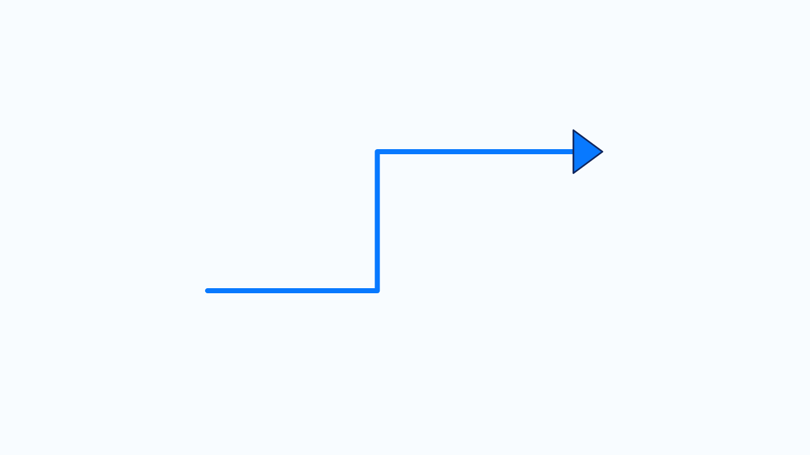
直角折线箭头
ani-atom-hd-arrow-elbow
指向组件；elbow路径；头部清晰。颜色、四向、线宽、头部像素和实例尺寸可调；与关联括线用途不同。
播放分层预览 · 打开编辑虚线进程箭头
ani-atom-hd-arrow-dashed
指向组件；straight路径；头部清晰。颜色、四向、线宽、头部像素和实例尺寸可调；与关联括线用途不同。
播放分层预览 · 打开编辑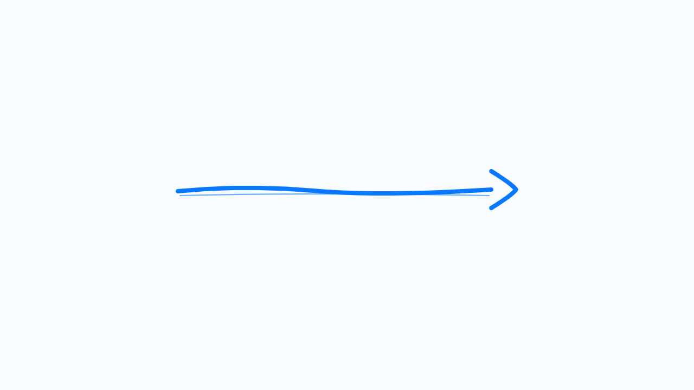
手绘双笔箭头
ani-atom-hd-arrow-handdrawn
指向组件；straight路径；头部清晰。颜色、四向、线宽、头部像素和实例尺寸可调；与关联括线用途不同。
播放分层预览 · 打开编辑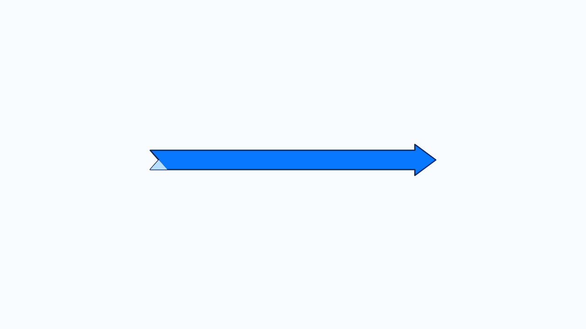
燕尾带状箭头
ani-atom-hd-arrow-ribbon
指向组件；straight路径；头部清晰。颜色、四向、线宽、头部像素和实例尺寸可调；与关联括线用途不同。
播放分层预览 · 打开编辑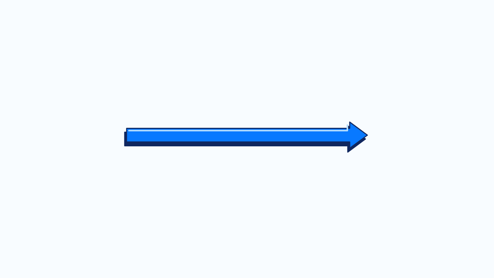
立体块状箭头
ani-atom-hd-arrow-block3d
指向组件；straight路径；头部清晰。颜色、四向、线宽、头部像素和实例尺寸可调；与关联括线用途不同。
播放分层预览 · 打开编辑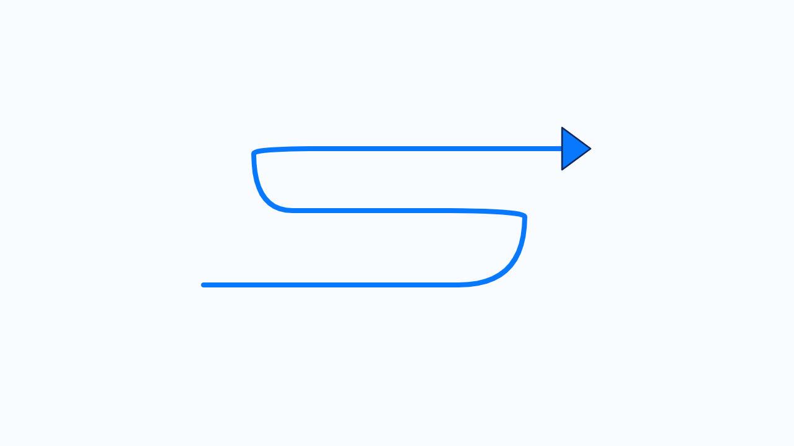
回转绕行箭头
ani-atom-hd-arrow-return
指向组件；return路径；头部清晰。颜色、四向、线宽、头部像素和实例尺寸可调；与关联括线用途不同。
播放分层预览 · 打开编辑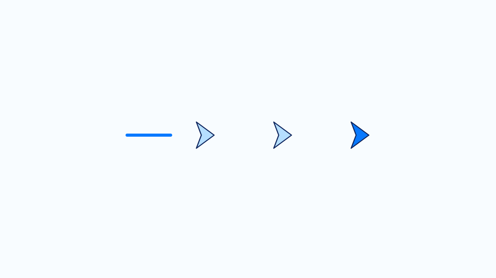
连续人字箭头
ani-atom-hd-arrow-chevrons
指向组件；straight路径；头部清晰。颜色、四向、线宽、头部像素和实例尺寸可调；与关联括线用途不同。
播放分层预览 · 打开编辑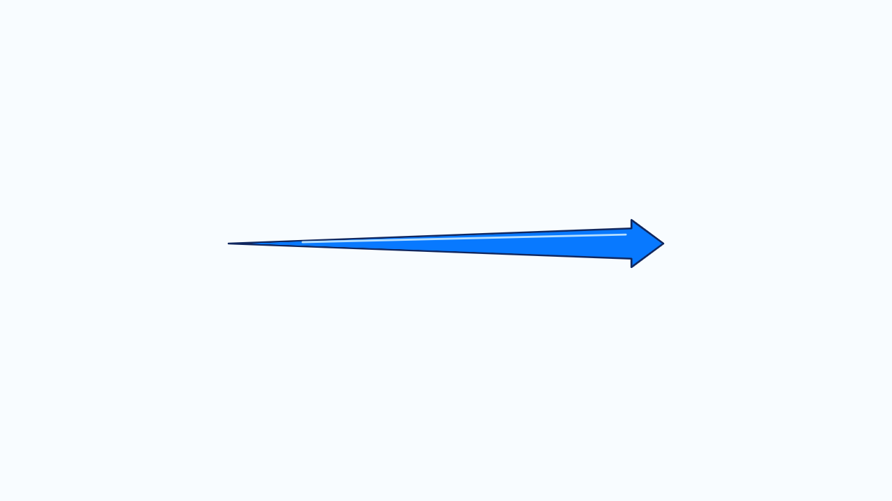
渐宽楔形箭头
ani-atom-hd-arrow-tapered
指向组件；straight路径；头部清晰。颜色、四向、线宽、头部像素和实例尺寸可调；与关联括线用途不同。
播放分层预览 · 打开编辑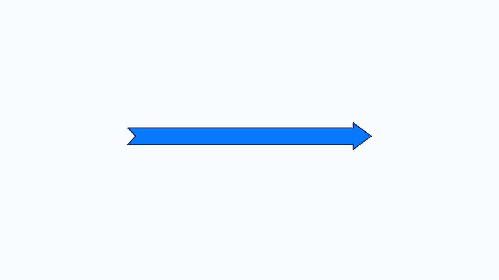
空V口燕尾箭头
ani-atom-hd-arrow-swallowtail
指向组件；straight路径；头部清晰。颜色、四向、线宽、头部像素和实例尺寸可调；与关联括线用途不同。
播放分层预览 · 打开编辑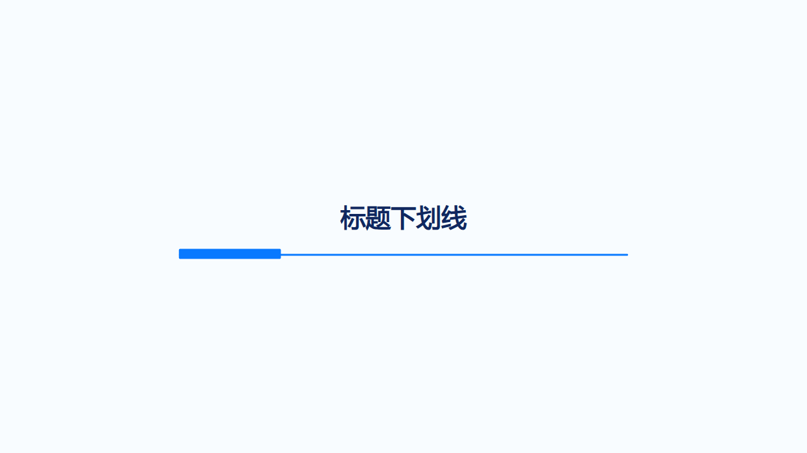
标题下划线
ani-atom-hd-label-heading-underline
语义标注；适用heading。同一语义等级在整片冻结同款；字号使用实例像素，不随原生600×180比例缩小。
播放分层预览 · 打开编辑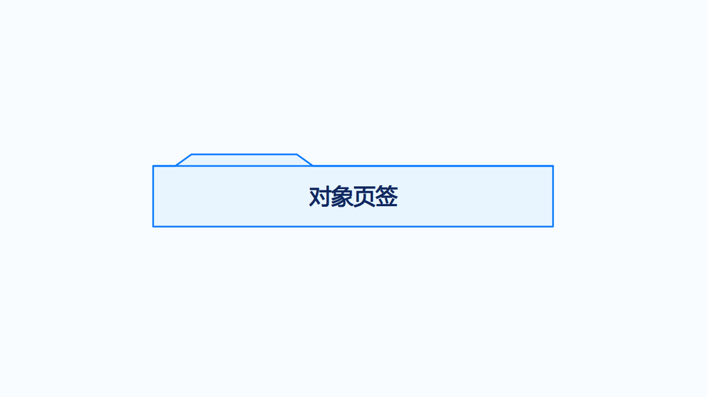
对象页签
ani-atom-hd-label-object-tab
语义标注；适用object。同一语义等级在整片冻结同款；字号使用实例像素，不随原生600×180比例缩小。
播放分层预览 · 打开编辑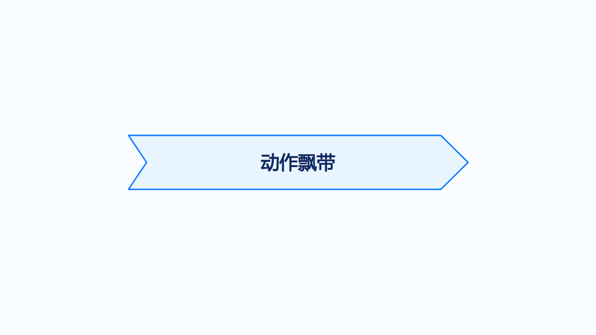
动作飘带
ani-atom-hd-label-action-ribbon
语义标注；适用action。同一语义等级在整片冻结同款；字号使用实例像素，不随原生600×180比例缩小。
播放分层预览 · 打开编辑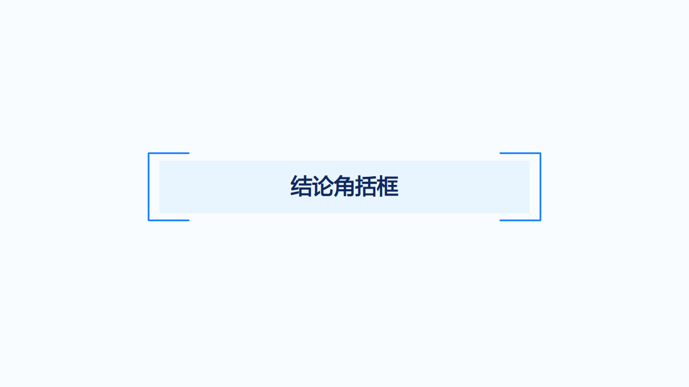
结论角括框
ani-atom-hd-label-conclusion-bracket
语义标注；适用conclusion。同一语义等级在整片冻结同款；字号使用实例像素，不随原生600×180比例缩小。
播放分层预览 · 打开编辑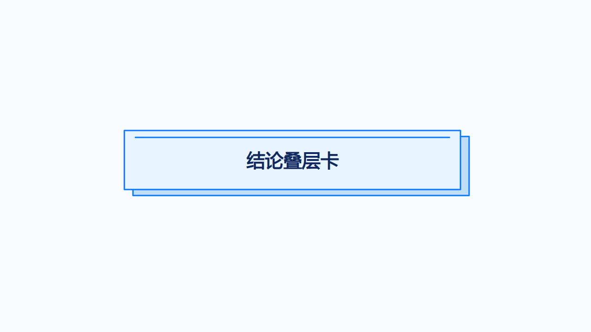
结论叠层卡
ani-atom-hd-label-conclusion-card
语义标注；适用conclusion。同一语义等级在整片冻结同款；字号使用实例像素，不随原生600×180比例缩小。
播放分层预览 · 打开编辑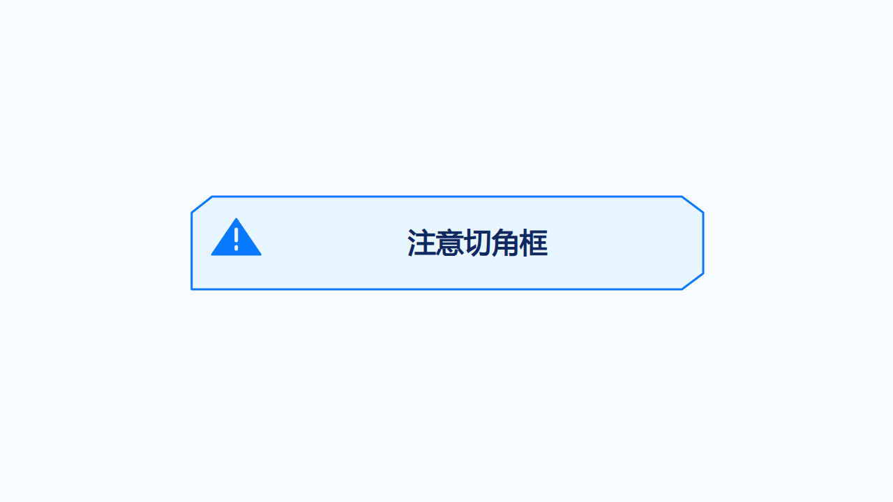
注意切角框
ani-atom-hd-label-caution-notched
语义标注；适用caution。同一语义等级在整片冻结同款；字号使用实例像素，不随原生600×180比例缩小。
播放分层预览 · 打开编辑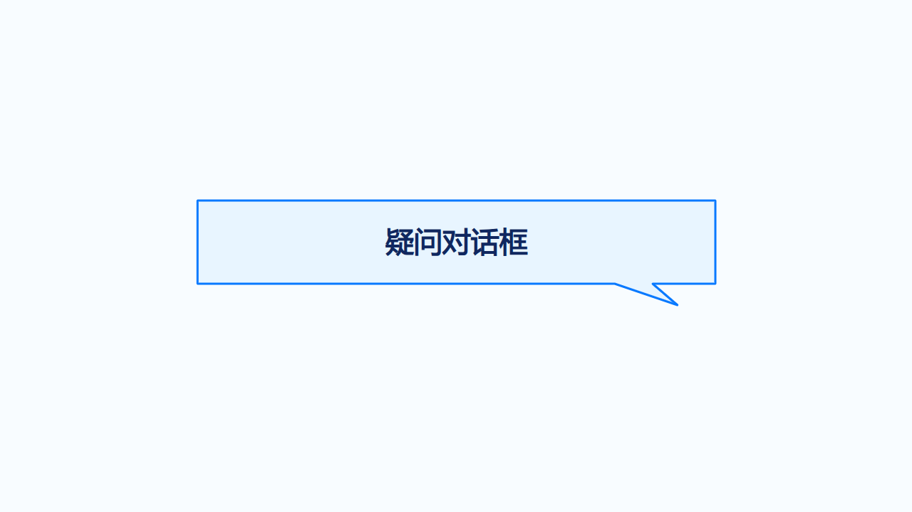
疑问对话框
ani-atom-hd-label-question-speech
语义标注；适用question。同一语义等级在整片冻结同款；字号使用实例像素，不随原生600×180比例缩小。
播放分层预览 · 打开编辑注解方线框
ani-atom-hd-label-note-outline
语义标注；适用note。同一语义等级在整片冻结同款；字号使用实例像素，不随原生600×180比例缩小。
播放分层预览 · 打开编辑